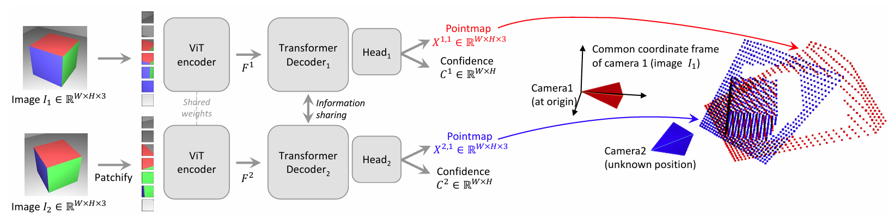

pipeline
==MASt3R（上）== 的网络结构和 DUSt3R（下） 基本一致，总体结构仍为双分支Transformer encoder-decoder，蓝色的部分是新增的模块。比较明显的是新增了一个 head 用来提取 local features，并且多了两个最近邻匹配模块用来构建匹配。

1. 摘要+引言
目标：对真实复杂场景中可动3D物体（如门、抽屉等）进行通用可控的运动建模与操控。
挑战：结构估计困难、运动建模泛化差、操控点预测不稳定。
MASt3R 在 DUSt3R 的基础上，提高匹配能力。
在 DUSt3R 前额外加一个 network 输出稠密的 local features，并添加 matching loss 来训练。最后引入一种快速相互匹配方案，能将匹配速度提高几个数量级。
2. 方法
MASt3R 的匹配基于 DUST3R ，结构仍为双分支Transformer encoder-decoder，输入为两张图像，输出包括 PointMap、ConfidenceMap 和 Desc Map，但进行了以下三方面增强：
（1）匹配关系的建模方式变化
与 DUST3R 不同，MASt3R 引入新的 InfoNCE 类匹配损失，建立 soft match 关系矩阵，定义如下：
给定两个图像 I_1, I_2，其中第 i 个 patch 与第 j 个 patch 的相似度为：$s_\tau(i, j) = \frac{ \exp\left( \frac{ D_i^1 \cdot D_j^2 }{\tau} \right) }{ \sum_{k \in P_2} \exp\left( \frac{ D_i^1 \cdot D_k^2 }{\tau} \right) }$ 。
形成 soft match 分布，并用于信息论损失：
$$ \mathcal{L}_{\text{match}} = -\sum_{(i,j) \in \mathcal{M}} \log \left( \frac{s_\tau(i,j)}{\sum_{k \in P_2} s_\tau(i,k)} \right) + \log \left( \frac{s_\tau(i,j)}{\sum_{k \in P_1} s_\tau(k,j)} \right) $$
ℳ 表示正匹配对，通常来自深度或光流提供的 GT。
这比 DUST3R 的 ℓregr 更稳定，而且明确了方向性约束（防止匹配发散）。
（2）输出模块新增 head
原 DUST3R 输出像素级PointMap和ConfidenceMap。
MASt3R 额外引入一个 Head 输出每个 patch 的 desc embedding，用于匹配图构造。
后接匹配损失并参与总 loss 计算：ℒtotal = ℒconf + βℒmatch。
ℒconf = ∑v ∈ {1, 2}∑i ∈ DvCiv ⋅ ℓregr(v,i) − αlog Civ
其中 ℓregr(j,i) = ∥X̂ij − Xij∥。
（3）双向最近邻
为提升匹配精度，引入 Reciprocal Matching ：仅保留相互为最近邻的匹配对 (x,y) ↔︎ (y,x)。
匹配过程中使用 KDTree 或 cdist 硬算 NN。收敛通过双向NN结果是否一致决定，最多迭代 N=10 轮。
这样在高分辨率特征图中比单向KD树更鲁棒，可以避免非对称误匹配。
KD-tree 仅用于 3D 点匹配，2D 特征匹配仍以 brute-force cdist 为主；
补充
代码解析
def fast_reciprocal_NNs(pts1, pts2, subsample_or_initxy1=8, ret_xy=True, pixel_tol=0, ret_basin=False, device='cuda', **matcher_kw): # 获取输入点集的形状，将点集重塑为二维数组 H1, W1, DIM1 = pts1.shape H2, W2, DIM2 = pts2.shape pts1 = pts1.reshape(-1, DIM1) pts2 = pts2.reshape(-1, DIM2) # 初始化子采样或坐标 # 如果subsample_or_initxy1是整数且pixel_tol为0，则进行子采样，计算子采样点的坐标x1和y1 # 如果subsample_or_initxy1是坐标数组，则直接使用这些坐标 if isinstance(subsample_or_initxy1, int) and pixel_tol == 0: S = subsample_or_initxy1 y1, x1 = np.mgrid[S // 2:H1:S, S // 2:W1:S].reshape(2, -1) max_iter = 10 # 最大迭代次数 else: x1, y1 = subsample_or_initxy1 if isinstance(x1, torch.Tensor): x1 = x1.cpu().numpy() if isinstance(y1, torch.Tensor): y1 = y1.cpu().numpy() max_iter = 1 # 如果提供了初始坐标，则只迭代一次 # 确保坐标唯一 xy1 = np.int32(np.unique(x1 + W1 * y1)) xy2 = np.full_like(xy1, -1) old_xy1 = xy1.copy() old_xy2 = xy2.copy() # 初始化匹配器 # 根据设备类型和其他参数，选择使用cdistMatcher或KDTree计算最邻近距离 # cdistMatcher是直接硬算，求出I1-I2的任意两个特征点的距离取最小 # 因为前面已经降采样过了，所以这里硬算也没啥问题 # KDTree就是用py的一个匹配库来快速计算NN if 'dist' in matcher_kw or 'block_size' in matcher_kw
or (isinstance(device, str) and device.startswith('cuda'))
or (isinstance(device, torch.device) and device.type.startswith('cuda')): pts1 = pts1.to(device) pts2 = pts2.to(device) tree1 = cdistMatcher(pts1, device=device) tree2 = cdistMatcher(pts2, device=device) else: pts1, pts2 = to_numpy((pts1, pts2)) tree1 = KDTree(pts1) tree2 = KDTree(pts2) # 初始化未收敛点的标志 notyet = np.ones(len(xy1), dtype=bool) basin = np.full((H1 * W1 + 1,), -1, dtype=np.int32) if ret_basin else None niter = 0 # 迭代计数器 # 迭代匹配 while notyet.any(): # 在pts2中查询pts1的最近邻 _, xy2[notyet] = to_numpy(tree2.query(pts1[xy1[notyet]], **matcher_kw)) if not ret_basin: notyet &= (old_xy2 != xy2) # 移除已收敛的点 # 在pts1中查询pts2的最近邻 _, xy1[notyet] = to_numpy(tree1.query(pts2[xy2[notyet]], **matcher_kw)) if ret_basin: basin[old_xy1[notyet]] = xy1[notyet] notyet &= (old_xy1 != xy1) # 移除已收敛的点 niter += 1 if niter >= max_iter: break # 达到最大迭代次数时停止 old_xy2[:] = xy2 old_xy1[:] = xy1 # 如果pixel_tol大于0，则计算每个点的移动距离，并根据容差确定是否收敛 if pixel_tol > 0: old_yx1 = np.unravel_index(old_xy1, (H1, W1))[0].base new_yx1 = np.unravel_index(xy1, (H1, W1))[0].base dis = np.linalg.norm(old_yx1 - new_yx1, axis=-1) converged = dis < pixel_tol if not isinstance(subsample_or_initxy1, int): xy1 = old_xy1 # 替换为旧的坐标 else: converged = ~notyet # 收敛的对应关系 # 保留唯一的对应关系，并按xy1排序 xy1, xy2 = merge_corres(xy1[converged], xy2[converged], (H1, W1), (H2, W2), ret_xy=ret_xy) if ret_basin: return xy1, xy2, basin return xy1, xy2